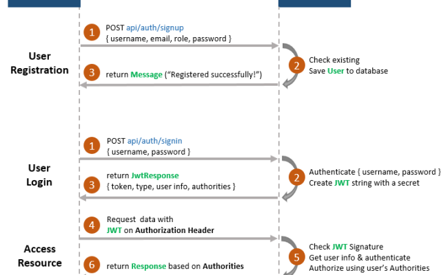
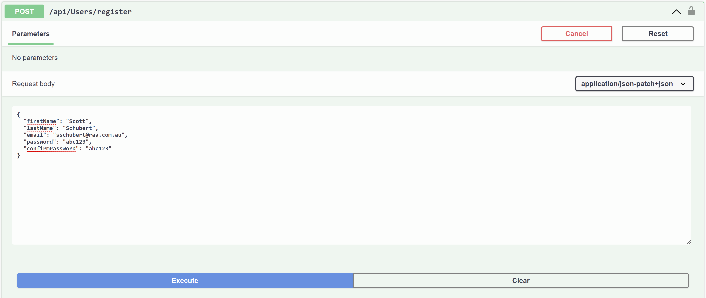
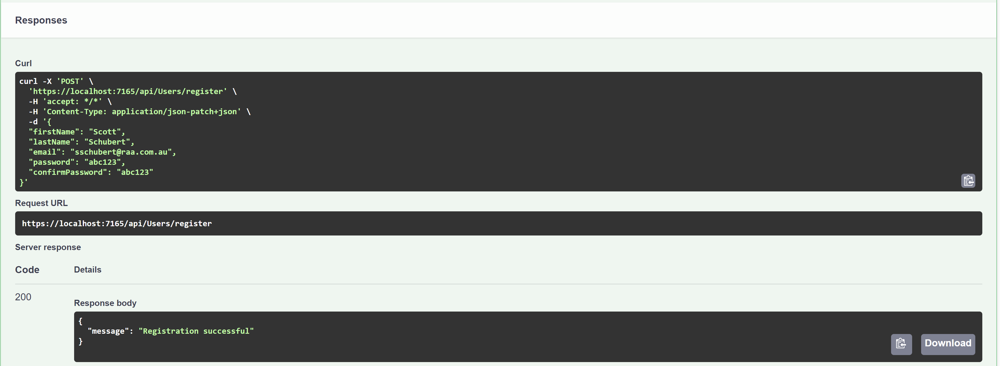
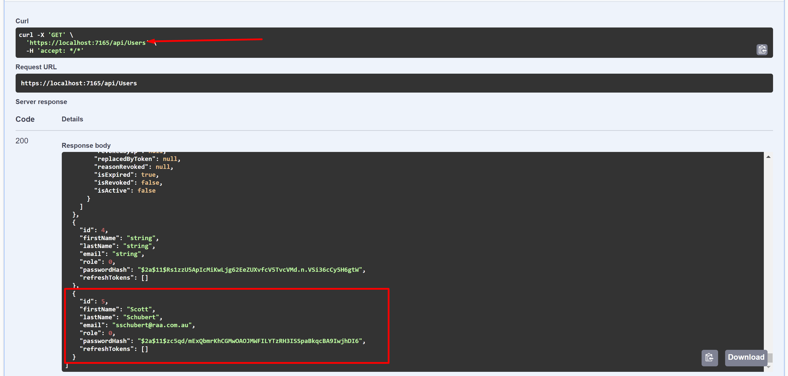
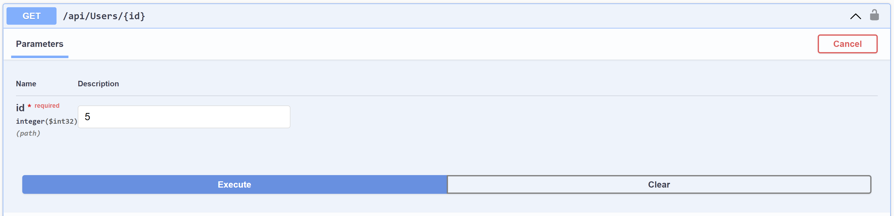
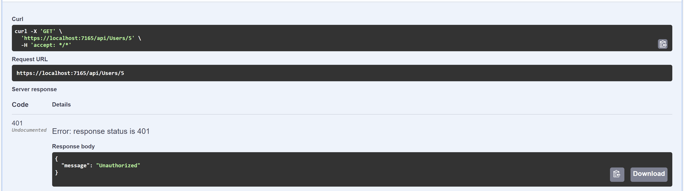
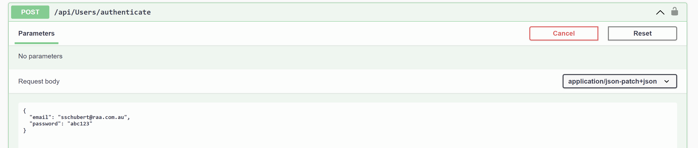
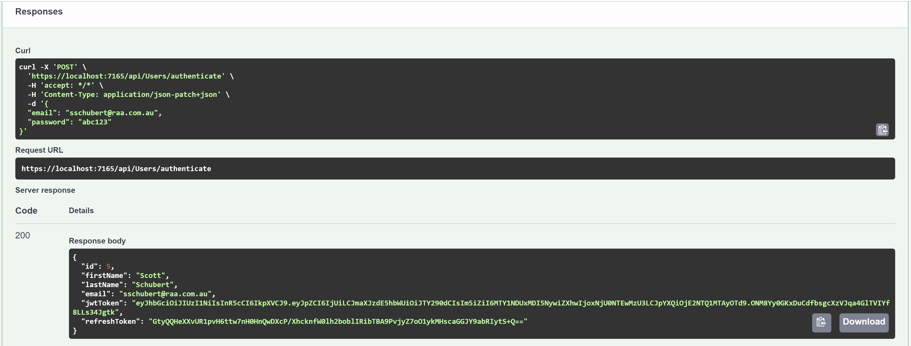
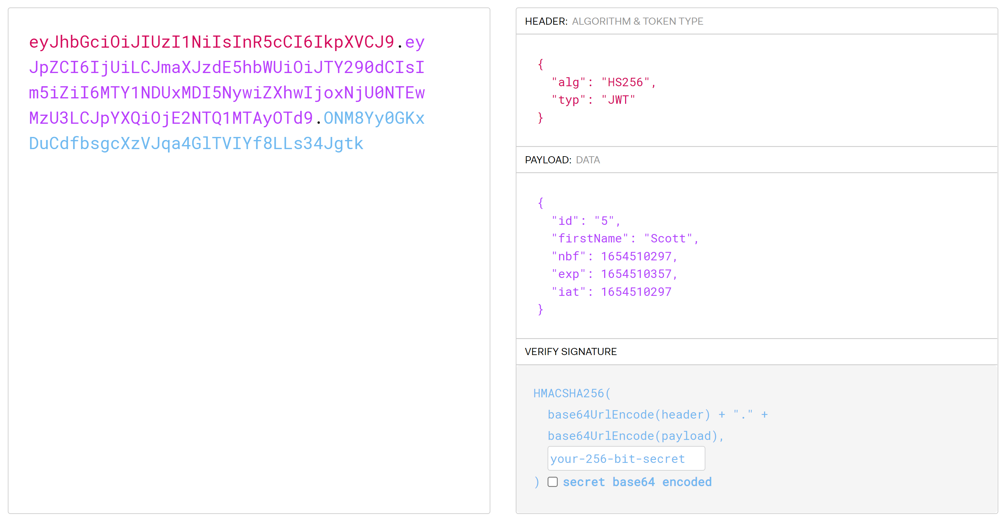
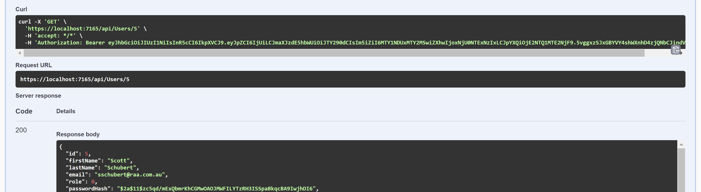

Authentication vs Authorization
| Authentication | Authorization |
|---|---|
| Determines whether users are who they claim to be | Determines what users can and cannot access |
| Challenges the user to validate credentials (for example, through passwords) | Verifies whether access is allowed through policies and rules |
| Usually done before authorization | Usually done after successful authentication |
What is a JWT?
A JWT is the acronym for JSON Web Token. A JWT can look something like this.
// The header
eyJhbGciOiJIUzI1NiIsInR5cCI6IkpXVCJ9.
// The payload
eyJpZCI6IjMiLCJuYmYiOjE2NTQyNjI1MzgsImV4cCI6MTY1NDI2MjU5OCwiaWF0IjoxNjU0MjYyNTM4fQ.
// The signature
fNcXKNiYCu5AI22vIjyBEnRAiYitrHhjdB9MnNpZGCk
What can be stored in a JWT?
Pretty much anything! However, JWT's can be read by anyone, so keep the information non-personal.

If they can be read by anyone, how are they secure?
The secret signature is what will keep your resources (e.g. API) secure!
Flow diagram of the process
Register process
End point in controller for registration
[HttpPost]
[Route("register")]
public async Task Register(RegisterRequest userForRegister)
{
try
{
await _userService.Register(userForRegister, Role.User);
return Ok(new { message = "Registration successful" });
}
catch (System.Exception ex)
{
return Conflict(ex.Message);
}
}
Registering a user request
Registering a user response
Authorised routes
Authorised routes require an authenticated user in order to be accessed.
The unprotected route in action
The protected route
[HttpGet]
[Authorize]
[Route("{id}", Name = "GetUserById")]
public async Task GetUserById(int id)
{
var user = await _userService.GetByIdAsync(id);
if (user == null)
{
return NotFound();
}
return Ok(user);
}
The protected route in action
 Time to login
Logging in will generate a JWT and allow us to provide it with requests.
The API will verify the JWT and then provide access to the resources.
The login process
Using the authenticate endpoint, we provide email and password as the AuthenticateRequest.

[AllowAnonymous]
[HttpPost("authenticate")]
public async Task Authenticate(AuthenticateRequest model)
{
try
{
var authResponse = await _userService.Authenticate(model, ipAddress());
setTokenCookie(authResponse.RefreshToken);
return Ok(authResponse);
}
catch (AppException ex)
{
return Unauthorized(ex);
}
}
Check the auth details in the User Service
Try and find the user by email, then check the password matches that in the database
var user = await _context.Users
.SingleOrDefaultAsync(x => x.Email == model.Email);
// validate
if (user == null
|| !BCrypt.Net.BCrypt.Verify(model.Password, user.PasswordHash))
throw new AppException("Username or password is incorrect");
If the user exists and password is correct, it's time to create the JWT!
Generate the JWT like so
public string GenerateJwtToken(User user)
{
// generate token that is valid for 15 minutes
var tokenHandler = new JwtSecurityTokenHandler();
var key = Encoding.ASCII.GetBytes(_appSettings.Secret);
var tokenDescriptor = new SecurityTokenDescriptor
{
Subject = new ClaimsIdentity(new[] {
new Claim("id", user.Id.ToString()),
new Claim("firstName", user.FirstName)
}),
Expires = DateTime.UtcNow.AddMinutes(1),
SigningCredentials = new SigningCredentials(new SymmetricSecurityKey(key), SecurityAlgorithms.HmacSha256Signature)
};
var token = tokenHandler.CreateToken(tokenDescriptor);
return tokenHandler.WriteToken(token);
}
The JWT is then returned
The return looks like the below
We can now see what's in it!
Now we can provide the JWT with our requests to the API
The JWT is attached to requests via the Authorization header.
The 'protected' route without the JWT
The 'protected' route with the JWT
How does the API 'intercept' requests to the Authorised routes
public async Task Invoke(HttpContext context, IUserService userService, IJwtUtils jwtUtils)
{
var token = context.Request.Headers["Authorization"]
.FirstOrDefault()?.Split(" ").Last();
var userId = jwtUtils.ValidateJwtToken(token);
if (userId != null)
{
// attach user to context on successful jwt validation
context.Items["User"] = await userService
.GetByIdAsync(userId.Value);
}
await _next(context);
}
The Authorize attribute
public void OnAuthorization(AuthorizationFilterContext context)
{
// skip authorization if action is decorated with [AllowAnonymous] attribute
var allowAnonymous = context.ActionDescriptor.EndpointMetadata.OfType().Any();
if (allowAnonymous)
return;
// authorization. This is set via the custom middleware.
var user = (User)context.HttpContext.Items["User"];
if (user == null)
context.Result = new JsonResult(new { message = "Unauthorized" }) { StatusCode = StatusCodes.Status401Unauthorized };
}